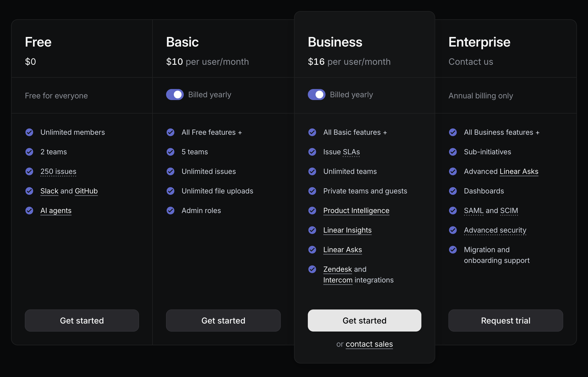

Why I use round prices
I set up a new pricing scheme for a data platform launching within days (more soon). Pricing is a particular interest of mine. I was thinking about what prices to list on the landing page. I considered doing a price that ended in a nine because lots of companies do that and it may improve conversion rates. But I decided against it in favor of round prices. Here's my thinking.
The product experience isn't just the software experience. It's every interaction with your company: the URL, the name, how you heard about it, what the landing page looks like, what the prices are – everything.
As a customer, seeing a clean $10 price tag on a product makes me feel treated better than seeing $9.99. The latter whiffs of manipulation, exploiting a psychological hack to increase conversion. Companies that show clean product prices win brand points with me.
Linear is one of the most beloved products in software development today. They offer simple, clean prices on their pricing page:

Cursor is also a beloved product, but their rollout of new pricing in the spring was opaque and arguably exploitative. A backlash ensued. Cursor apologized, but it may have cost them market share to Claude Code, Codex, and GitHub Copilot.
As a side note, I recently learned that the 99¢ price strategy didn't emerge as a conversion hack, but instead as a way to prevent employee embezzlement, beginning in the late 19th century. From Sheel Mohnot on X:
Every time a clerk rang up a sale, the drawer opened and the bell chimed. That sound told the owner money was (or wasn't) going into the till. Merchants discovered that if they priced items at 49¢ or 99¢, the clerk had to open the drawer to make change, forcing the bell to ring and the sale to be recorded. Around this time in the late 1800s, prices began ending this way.
Marketing psychology caught onto the price perception benefits of the 99¢ strategy decades later.